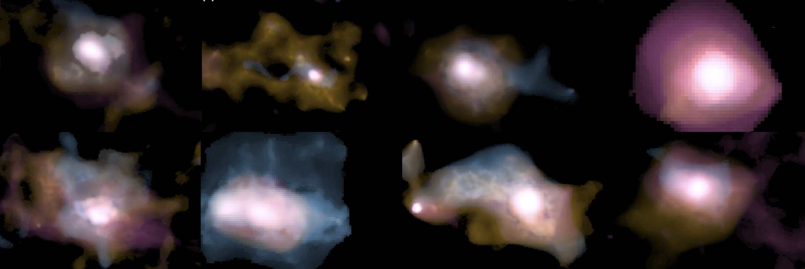
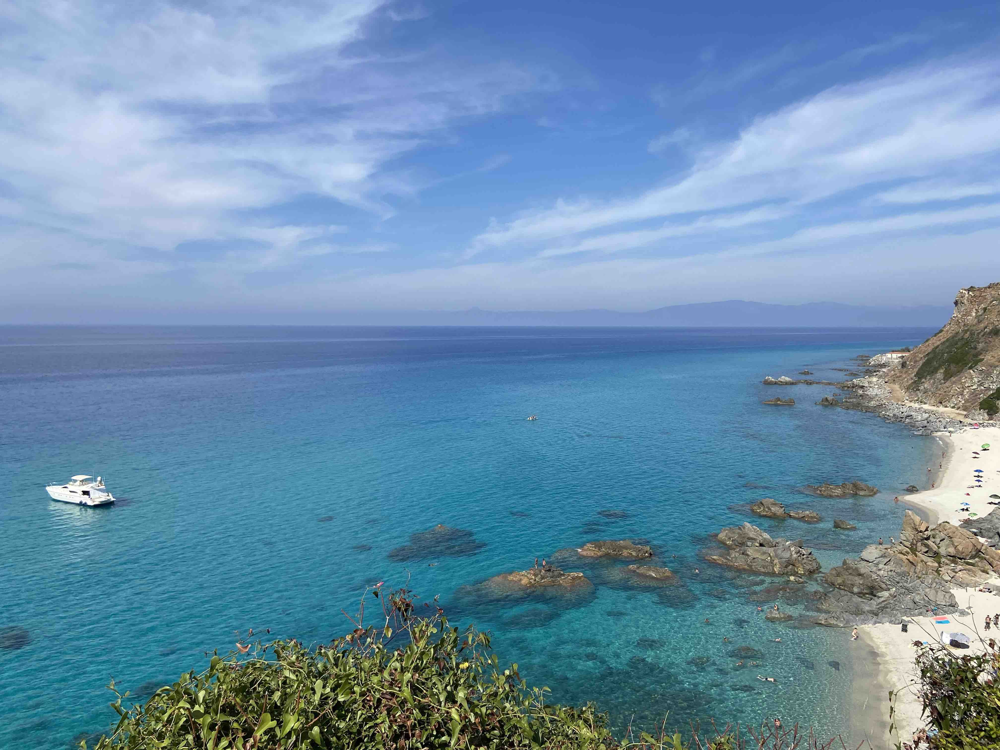
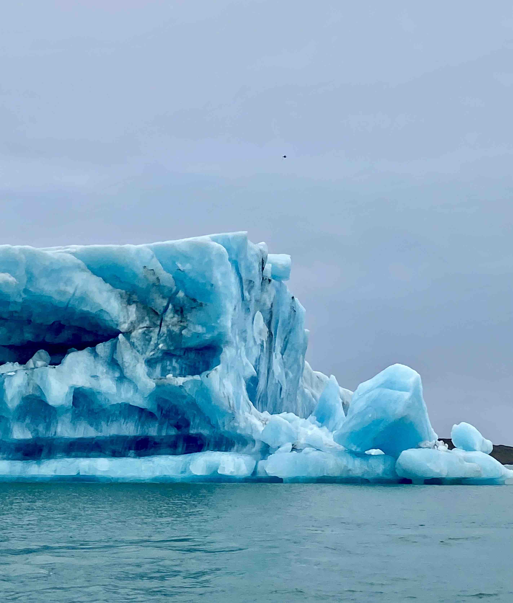
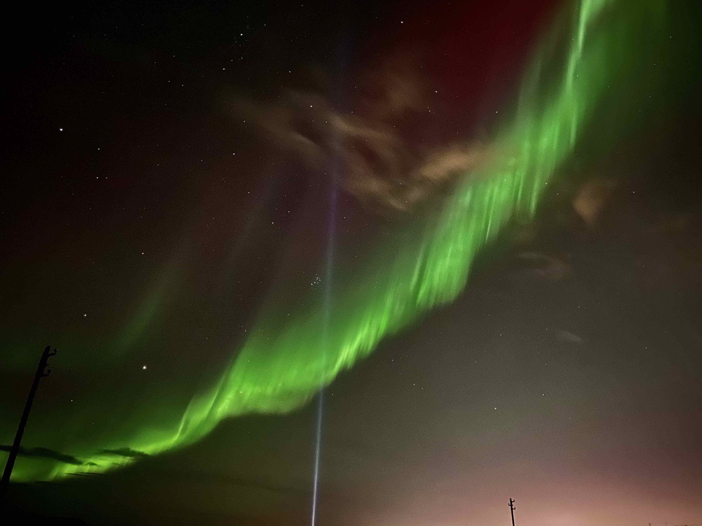
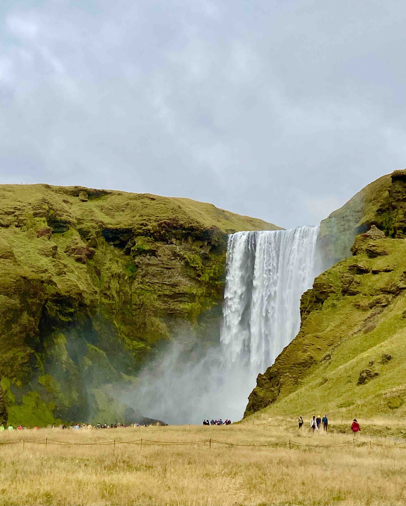

<!DOCTYPE HTML>
<!--
	Hyperspace by HTML5 UP
	html5up.net | @ajlkn
	Free for personal and commercial use under the CCA 3.0 license (html5up.net/license)
-->
<html>
	<head>
		<title>Wuji Wang's Personal Website</title>
		<meta charset="utf-8" />
		<meta name="viewport" content="width=device-width, initial-scale=1, user-scalable=no" />
		<link rel="stylesheet" href="assets/css/main.css" />
		<noscript><link rel="stylesheet" href="assets/css/noscript.css" /></noscript>
        <!--<script async src="https://api.countapi.xyz/hit/wujiwang-astro.github.io/8a1ebefe-d935-4fe4-afe7-1ed099eb8d66?callback=websiteVisits"></script>-->
	</head>
	<body class="is-preload">

		<!-- Sidebar -->
			<section id="sidebar">
				<div class="inner">
					<nav>
						<ul>
							<li><a href="#intro">Home</a></li>
							<li><a href="#edu">Career & Education</a></li>
							<li><a href="#paper">Publications & Theses</a></li>
							<li><a href="#obs">PI Observations</a></li>
                            <li><a href="#talkmedia">Talks & Media</a></li>
                            <li><a href="#teaching">Teaching</a></li>
						</ul>
					</nav>
				</div>
			</section>

		<!-- Wrapper -->
			<div id="wrapper">

				<!-- Intro -->
					<section id="intro" class="wrapper style1 fullscreen fade-up">
						<div class="inner">
                                <h1>WANG, Wuji 王无忌<a href="#" class="image right"></a></h1>
                                <h2>Hello and welcome!</h2>
                            <p></p>
							<p> I am currently a postdoctoral researcher at <a href="https://www.ipac.caltech.edu/">Caltech/IPAC</a> working with Dr. Andreas Faisst and Dr. Kyle Finner. I did my PhD at <a href="https://zah.uni-heidelberg.de/welcome">Zentrum für Astronomie der Universität Heidelberg</a> Astronomisches Rechen-Institut. My thesis supervisor is <a href="https://wwwstaff.ari.uni-heidelberg.de/dwylezalek/">Dr. Dominika Wylezalek</a>, and I was part of the <a href="https://wwwstaff.ari.uni-heidelberg.de/dwylezalek/galena.html">GALENA</a> group. I am also closely working with Dr. Joël Vernet and Dr. Carlos De Breuck at <a href="https://www.eso.org/">ESO</a>.
                            </p>
                            <p> My research interests are galaxy formation and evolution in the early universe. I am interested in the feedback processes of the AGN and how they affect the ISM and CGM of the host galaxies. Besides AGN, I am also curious about the build-up of various galaxy species at the transition period, i.e., between Cosmic Noon and Dawn. My PhD work focused on studying the feedback processes in a sample of high-redshift radio galaxies (HzRGs, z>2) using the observations of integral field spectrographs (broad definition). I am PI of <a href="#obs"> VLT/UVES, ALMA and most importantly JWST/NIRSpec IFU obsrvations</a> of samples of HzRGs.
                            </p>
                            <ul class="icons">
                                <br/>
                                <li><a href="mailto: wujiwang@ipac.caltech.edu" class="icon solid fa-envelope"><span class="label">Email</span></a></li>
                                <li><a href="mailto: wuji.wang_astro@outlook.com" class="icon solid fa-envelope-square"><span class="label">Email</span></a></li>
                                <li><a href="https://twitter.com/Regulus_wang" class="icon brands fa-twitter"><span class="label">Twitter</span></a></li>
                            </ul>

                            <h2><i class="gg-browse"></i>JWST view of HzRGs</h2>
                            <figure>
                                
                            </figure>
                            <p class="paragraph">
                            In <a href="https://ui.adsabs.harvard.edu/abs/2024A%26A...683A.169W/abstract">Wang et al. 2024</a>, I use JWST NIRSpec/IFU to observe a z=3.59 radio-loud AGN. The spatially resolved line ratio diagrams indicate the AGN photoionization dominates the ISM. Despite the central AGN having high luminosity, we only find weak radiative-driven outflow even at around the nucleus. The high sensitive JWST observation unveil the complex morphology and kinematics of the ISM in these monsters near Cosmic Noon (e.g., Fig. 1).
                            </p>
                            
                            
                            <h2><i class="gg-browse"></i>Mapping absorbing gaseous halos</h2>
                            <!--
                            <figure>
                                
                            </figure>
                            -->
                            <p class="paragraph">
                            In <a href="https://ui.adsabs.harvard.edu/abs/2021arXiv210709066W/abstract">Wang et al. 2021</a>, we examed the spatial distribution of the absorbing neutral hydrogen gas (as well as metal enriched gas) around the highest redshift radio galaxies in our MUSE sample, z=4.5077. We obtained the spatial column density distribution and velocity shift maps of the neutral hydrogen absorbers through fitting the absorption features spatially with Ly-alpha emission. In 1 of the 7 absorbers, we identified a colunm density gradient and a velocity gradient. We propose this could show evidence of AGN enriching and redistributing metals at ISM/CGM scale (Fig.2).
                            </p>
                            
                            <h2><i class="gg-browse"></i>Tomography of Ly-alpha nebulae</h2>
                            <figure>
                                
                            </figure>
                            <p class="paragraph">
                            In <a href="https://ui.adsabs.harvard.edu/abs/2023A%26A...680A..70W/abstract">Wang et al. 2023</a>, we followed the technique extablished in the previous work and applied to the whole sample. The nebulae around our z&#8776 3--5 radio AGN are found to be extended in size (7 out of 8 > 100 kpc, see Fig. 3 as a gallery). The intrinsic (absorption corrected) nebulae are found to be brighter and more asymmetric than type-1s. Through the morphological study, we found evidence that the AGN orientation and resonant scattering shape the CGM emission gas. Furthermore, there is indication that the Ly-alpha photons from nearby companions 'contaminate' the nebulae of our radio AGN. This work provides results which allow us to compare Ly-alpha nebulae around various quasar species at and beyong Cosmic Noon.
                            </p>
                            


							<!--<ul class="actions">
								<li><a href="#one" class="button scrolly">Learn more</a></li>
							</ul>-->
						</div>
					</section>

				<!-- One -->
					<section id="edu" class="wrapper style2 fullscreen fade-up">
                        <!--<section>-->
							<!--<a href="#" class="image"></a>-->
							<!--<div class="content">-->
								<div class="inner">
									<h2>Career & Education</h2>
                                    <table style="width:90%">
                                            <tr>
                                              <td>Caltech/IPAC</td>
                                              <td>Sept. 2024 - 2027</td>
                                              <td>USA</td>
                                              <td>Postdoctoral Researcher</td>
                                            </tr>
                                            <tr>
                                              <td>Heidelberg University</td>
                                              <td>Oct. 2020 - Jul. 2024</td>
                                              <td>Germany</td>
                                              <td>PhD</td>
                                            </tr>
                                            <tr>
                                                    <td>European Southern Observatory</td>
                                                    <td>Apr. 2019 - Jun. 2020</td>
                                                    <td>Germany</td>
                                                    <td>Master Thesis Work</td>
                                            </tr>
                                            <tr>
                                              <td>Ludwig Maximilian University of Munich</td>
                                              <td>Apr. 2018 - Jul. 2020</td>
                                              <td>Germany</td>
                                              <td>Master in Astronomy</td>
                                            </tr>
                                            <tr>
                                              <td>Nanjing University</td>
                                              <td>Sept. 2013 - Jul. 2017</td>
                                              <td>China</td>
                                              <td>Bachelor of Astronomy</td>
                                            </tr>
                                          </table>
                                    
                                    <p>
                                    <a href="./files/CV_WujiWang.pdf">
                                    CV: PDF Version</a>
                                    </p>
								</div>
					</section>

				<!-- Two -->
					<section id="paper" class="wrapper style2-alt fullscreen fade-up">
						<div class="inner">
							<h2>First-author papers</h2>
                            <p> &#9679;<a href=" https://ui.adsabs.harvard.edu/abs/2024A%26A...683A.169W/abstract">
                                JWST discovers an AGN ionization cone but only weak radiative-driven feedback in a powerful z &#8776 3.5 radio-loud AGN</a><br/>
                                <font size="-1"><i><b>Wuji Wang</b>, Dominika Wylezalek, Carlos De Breuck, Joël Vernet, David S. N. Rupke, Nadia L. Zakamska, Andrey Vayner, Matthew D. Lehnert, Nicole P. H. Nesvadba and Daniel Stern (A&A published, 2024)</i></font>
                            </p>
                            <p> &#9679;<a href="https://ui.adsabs.harvard.edu/abs/2023A%26A...680A..70W/abstract">
                                3D tomography of the giant Ly-alpha nebulae of z &#8776 3--5 radio-loud AGN</a><br/>
                                <font size="-1"><i><b>Wuji Wang</b>, Dominika Wylezalek, Joël Vernet, Carlos De Breuck, Bitten Gullberg, Mark Swinbank, Montserrat Villar Martín, Matthew D. Lehnert, Guillaume Drouart, Fabrizio Arrigoni Battaia, Andrew Humphrey, Gaël Noirot, Sthabile Kolwa, Nick Seymour, and Patricio Lagos (A&A published, 2023)</i></font>
                            </p>
                            <p> &#9679;<a href="https://ui.adsabs.harvard.edu/abs/2021A%26A...654A..88W/abstract">
                                Mapping the "invisible" circumgalactic medium around a z ∼ 4.5 radio galaxy with MUSE</a><br/>
                                <font size="-1"><i><b>Wuji Wang</b>, Dominika Wylezalek, Carlos De Breuck, Joël Vernet, Andrew Humphrey, Montserrat Villar Martín, Matthew Lehnert, Sthabile Kolwa (A&A published, 2021)</i></font>
                            </p>
                            
                            <h2>Co-author papers</h2>
                            <p> &#9679; <a href="https://ui.adsabs.harvard.edu/abs/2023MNRAS.525.5831K/abstract">
                                Faint [C I](1-0) emission in z~3.5 radio galaxies</a><br/>
                            <font size="-1"><i>Sthabile Kolwa; C. De Breuck; J. Vernet; D. Wylezalek; <b>Wuji Wang</b>; ... (MNRAS published, 2023)</i></font>
                            </p>
                            <p> &#9679; <a href="https://ui.adsabs.harvard.edu/abs/2023ApJ...952..124Z/abstract">
                                Revealing the Gas Recycling in the Circumgalactic Medium (CGM) Utilizing a Luminous Lya Nebula around a Type II Quasar at z = 2.6 with the Keck Cosmic Web Imager (KCWI)</a><br/>
                            <font size="-1"><i>Shiwu Zhang; Zheng Cai; Dandan Xu; ...; <b>Wuji Wang</b>; ... (ApJ published, 2023)</i></font>
                            </p>
                            <p> &#9679; <a href="https://ui.adsabs.harvard.edu/abs/2023MNRAS.518.5500B/abstract">
                                MASCOT: Molecular gas depletion times and metallicity gradients -- evidence for feedback in quenching active galaxies</a><br/>
                            <font size="-1"><i>Bertemes, C. ; Wylezalek, D. ; Albán, M.; ...; <b>Wuji Wang</b> (MNRAS published, 2022)</i></font>
                            </p>
                            <p> &#9679; <a href="https://ui.adsabs.harvard.edu/abs/2022MNRAS.510.3119W/abstract">
                                MASCOT -- An ESO-ARO legacy survey of molecular gas in nearby SDSS-MaNGA galaxies: I. first data release, and global and resolved relations between H_2 and stellar content</a><br/>
                            <font size="-1"><i>D.Wylezalek, C. Cicone, F. Belfiore,  C. Bertemes, S. Cazzoli, J. Wagg, <b>Wuji Wang</b>,  M. Aravena, R. Maiolino, S. Martin, M.S. Bothwell, J.R. Brownstein, K. Bundy, C. De Breuck (MNRAS published, 2022)</i></font>
                            </p>
                            <p> &#9679; <a href="https://ui.adsabs.harvard.edu/abs/2021A%26A...645A.120F/abstract">
                                ALMA and MUSE observations reveal a quiescent multi-phase circumgalactic medium around the z~3.6 radio galaxy 4C 19.71</a><br/>
                            <font size="-1"><i>Theresa Falkendal, Matthew D. Lehnert, Joël Vernet, Carlos De Breuck, <b>Wuji Wang</b> (A&A published, 2021)</i></font>
                            </p>

                            

                            
                            <h2>Theses</h2>
                            <p> &#9679; PhD Thesis :
                                <a href="https://archiv.ub.uni-heidelberg.de/volltextserver/35167/">
                                Three-dimensional view of circumgalactic to interstellar medium around distant radio galaxies</a>
                            </p>
                            <p> &#9679; Master Thesis :
                                <a href="./files/MasterThesis_LMU_physics_Wuji_Wang.pdf">
                                MUSE View of the CGM around a z ~ 4.5 Radio Galaxy</a>
                            </p>
                            <p> &#9679; Bachelor Thesis (Chinese with English abstract):
                                <a href="./files/Bachelor_T_WujiWang.pdf">
                                Investigating the high-redshift tidal disruption event candidate in the CDF-S</a>
                            </p>
                            <h3><a href="https://ui.adsabs.harvard.edu/public-libraries/BRKFteavQGK2qrtljtTo_w">ADS library of my publications</a></h3>
							</div>
                    
					</section>

				<!-- Three -->
					<section id="obs" class="wrapper style3 fullscreen fade-up">
						<div class="inner">
							<h2>PI Observation programs</h2>
							<p>&#9679; JWST NIRSpec/IFU, Cycle 1, 24.5h:<br/>
                            <a href="https://www.stsci.edu/jwst/science-execution/program-information.html?id=1970">Zooming into the Monster's Mouth: Tracing Feedback from Their Hosts to Circumgalactic Medium in z=3.5 Radio-loud AGN</a>
                            </p>
                            <p> &#9679; VLT/UVES, P108, 20h -- 108.21WL.001
                            </p>
                            <p> &#9679; ALMA, Cycle 8, 19.9h (13.9h executed) -- 2021.1.00576.S
                            </p>
                        </div>
					</section>
                <!-- Four -->
                    <section id="talkmedia" class="wrapper style3-alt fullscreen fade-up">
                        <div class="inner">
                            <h2>Invited Talks and Workshops</h2>
                            <table style="width:90%">
                                <tr>
                                    <td>Oct.23rd-27th/2023</td>
                                    <td><a href="">The importance of jet-induced feedback on galaxy scales workshop</a>   <i class="fa fa-comment"></i> @NL</td>
                                  </tr>

                                <tr>
                                  <td>Jun.30th/2021</td>
                                  <td><a href="">Group meeting talk at Tsinghua High-z Team</a>   <i class="fa fa-comment"></i> @online</td>
                                </tr>

                                
                            </table>
                            <h2>Conference/Seminar Talks & Media</h2>
                            <table style="width:90%">
                                    <tr>
                                        <td>Dec.4th/2023</td>
                                        <td><a>Caltech Tea Talk, Talk</a>   <i class="fa fa-comment"></i> @CA, USA<br />
                                            <!---->
                                        </td>
                                    </tr>
                                    <tr>
                                        <td>Dec.1st/2023</td>
                                        <td><a href="https://astro-eureca.github.io/archive.html">UA Steward Observatory EURECA, Talk</a>   <i class="fa fa-comment"></i> @AZ, USA<br \>
                                            <!---->
                                        </td>
                                    </tr>
                                    <tr>
                                        <td>Nov.28th/2023</td>
                                        <td><a href="https://sites.google.com/site/stscigalaxyclub/">STScI-JHU Galaxy Journal Club, Talk</a><i class="fa fa-comment"></i> @MD, USA<br \>
                                            <!---->
                                        </td>
                                    </tr>
                                    <tr>
                                        <td>Nov.2nd/2023</td>
                                        <td><a href="https://www2.mpia-hd.mpg.de/GC/GCwiki/">MPIA Galaxy Coffee, Talk</a>   <i class="fa fa-comment"></i> @DE</td>
                                    </tr>
                                    <tr>
                                        <td>Sept.11-15th/2023</td>
                                        <td><a style="color:Salmon">Conference:</a> <a href="https://agnonthebeach.space/">AGN on the beach (best conference experience ever!), Talk</a>   <i class="fa fa-comment"></i> @IT<br \></td>
                                        
                                    </tr>
                                    <tr>
                                        <td>Jul.10-14th/2023</td>
                                        <td><a style="color:Salmon">Conference:</a> <a href="https://eas.unige.ch/EAS_meeting/index.jsp">EAS 2023, Talk</a>   <i class="fa fa-comment"></i> @PL<br \>
                                            <!---->
                                        </td>
                                    </tr>
                                    <tr>
                                        <td>Feb.23rd/2023</td>
                                        <td><a href="https://www2.mpia-hd.mpg.de/GC/GCwiki/">MPIA Galaxy Coffee, Talk</a>   <i class="fa fa-comment"></i> @DE</td>
                                    </tr>
                                    <tr>
                                        <td>Dec.1st/2022</td>
                                        <td><a href="https://zah.uni-heidelberg.de/talks-seminars-events/details?tx_zahinfothek_eventslist%5Baction%5D=full&tx_zahinfothek_eventslist%5Bid%5D=5&cHash=2c41d70df79a38d577e6e9b762b2e4b8">ARI Institute Colloquium, Talk</a>   <i class="fa fa-comment"></i> @DE</td>
                                    </tr>
                                    <tr>
                                        <td>Sept.26-30th/2022</td>
                                        <td><a style="color:Salmon">Conference:</a> <a href="http://astro.dur.ac.uk/~xswt42/Growth_of_Black_Holes/index2.php">What drives the growth of black holes, Poster</a>   <i class="fa fa-file-pdf"></i> @IS<br /></td>
    
                                    </tr>
                                    <tr>
                                        <td>Sept.12-16th/2022</td>
                                        <td><a style="color:Salmon">Conference:</a> <a href="https://sites.google.com/unimib.it/gas2022/dates-programme?authuser=0">What matter(s) around galaxies 2022, Talk</a>     <i class="fa fa-comment"></i> @IT<br />
                                            <!---->
                                            </td>
                                    </tr>
                                    <tr>
                                        <td>Jan.27th/2022</td>
                                        <td><a href="https://www2.mpia-hd.mpg.de/GC/GCwiki/">MPIA Galaxy Coffee, Talk</a>   <i class="fa fa-comment"></i> @DE</td>
                                    </tr>
                                    <tr>
                                        <td>Jan.26th/2022</td>
                                        <td><a style="color:Salmon">Conference:</a> <a href="https://www.astro.udp.cl/Quasars_and_Galaxies_through_Cosmic_Time/abstracts.html#Wuji-Wang">Quasars and Galaxies through Cosmic Time, Talk</a> (<a href="https://www.youtube.com/watch?v=vZMt3bEoC3I&list=PL5HgqSUEiSGN5cLYFTPmIg6lU5Lx-pvOQ&index=4">YouTube Recording</a>)    <i class="fa fa-comment"></i> @online</td>
                                    </tr>
                                    <tr>
                                        <td>Nov.3rd/2021</td>
                                        <td><a style="color:Salmon">Conference:</a> <a href="https://kiaa.pku.edu.cn/KooGig_junior21/Program.htm">1st KooGiG-Junior, Talk</a>    <i class="fa fa-comment"></i> @online</td>
                                    </tr>
                                    <tr>
                                        <td>Aug.2021</td>
                                        <td><a href="https://backend-484.uni-heidelberg.de/de/dokumente/unispiegel2021-2/download">UNI SPIEGEL</a>   <i class="fa fa-newspaper"></i></td>
                                    </tr>
                                    <tr>
                                        <td>Jun.28th-Jul.2nd/2021</td>
                                        <td><a style="color:Salmon">Conference:</a> <a href="https://k-poster.kuoni-congress.info/eas2021/poster/53abc76f-138d-439c-8edc-ee7eac0105b3">EAS 2021, ePoster</a>   <i class="fa fa-file-pdf"></i> @online</td>
                                    </tr>
                                    <tr>
                                        <td>Jun.17th/2021</td>
                                        <td><a href="https://zah.uni-heidelberg.de/talks-seminars-events/details?tx_zahinfothek_eventslist%5Baction%5D=full&tx_zahinfothek_eventslist%5Bid%5D=5&cHash=2c41d70df79a38d577e6e9b762b2e4b8">ARI Institute Colloquium, talk</a>   <i class="fa fa-comment"></i> @online</td>
                                    </tr>
                                    <tr>
                                      <td>Apr.20th/2021</td>
                                      <td><a href="https://zah.uni-heidelberg.de/news/detail/zooming-into-the-monsters-mouth">ZAH Press Release</a>   <i class="fa fa-newspaper"></i></td>
                                    </tr>
   
                                    
                                </table>
                                  
                        </div>
                    </section>
                    <!-- Five -->
                    <section id="teaching" class="wrapper style3 fullscreen fade-up">
                        <div class="inner">
                            <h2>Teaching</h2>
                            <p> &#9679; March 2024 -- :
                                <a href="https://wwwstaff.ari.uni-heidelberg.de/dwylezalek/galena.html">MSc Thesis -- Julian Groth, Heidelberg University, co-advise</a>  <b>-- Analysis of my JWST data</b>
                            </p>
                            <p> &#9679; June 2023 -- July 2024:
                                <a href="https://wwwstaff.ari.uni-heidelberg.de/dwylezalek/galena.html">MSc Thesis -- Jelena Ritter, Heidelberg University, co-advise</a>  <b>-- Analysis of my UVES data</b>
                            </p>
                            <p> &#9679; October 2022 -- June 2023:
                                <a href="https://wwwstaff.ari.uni-heidelberg.de/dwylezalek/galena.html">BSc Project & Thesis -- Yu-Ruei Wang, Heidelberg University, co-advise</a>
                            </p>
                            <p> &#9679; October 2021 -- June 2022 :
                                <a>CCD photometry in modern astronomy (FP30), Heidelberg University, tutor</a>
                            </p>
                            <p> &#9679; March 2021 -- July 2021:
                                <a href="https://wwwstaff.ari.uni-heidelberg.de/dwylezalek/galena.html">BSc Thesis -- Chuanming Mao, Heidelberg University, co-advise</a>
                            </p>
                            <p>&#9679; March 2021 -- July 2021:
                            <a>Galactic and Extragalactic Astronomy (MVastro3), Heidelberg University, tutor </a>
                            </p>


                        </div>
                    </section>

		<!-- Footer -->
			<footer id="footer" class="wrapper style1-alt">
				<div class="inner">
					<ul class="menu">
						<li>&copy; WujiWang</li><li>Design: <a href="http://html5up.net">HTML5 UP</a></li>
                        <p><a href="https://clustrmaps.com/site/1bt53"  title="Visit tracker"></a></p>
					</ul>
				</div>
			</footer>

		<!-- Scripts -->
			<script src="assets/js/jquery.min.js"></script>
			<script src="assets/js/jquery.scrollex.min.js"></script>
			<script src="assets/js/jquery.scrolly.min.js"></script>
			<script src="assets/js/browser.min.js"></script>
			<script src="assets/js/breakpoints.min.js"></script>
			<script src="assets/js/util.js"></script>
			<script src="assets/js/main.js"></script>

	</body>
</html>
